关卡引导收敛 · 前后对照
1280×720 真实 Godot 4.7.1 渲染。“之前”为 main 472890a 的开发路由截图；“之后”包含开发路由截图与真实输入回放（test_half_adder_input）截图。测试模式下顶栏会多出“测试模式”选择框。
NOT：求助与步骤卡
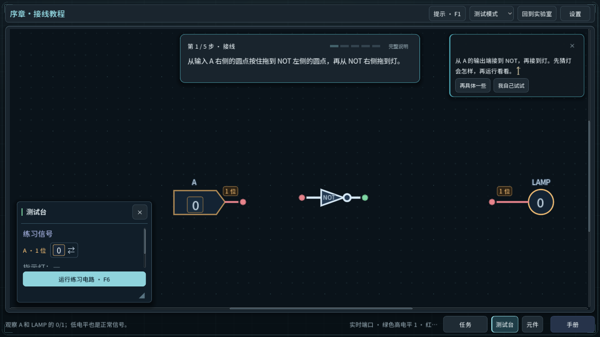
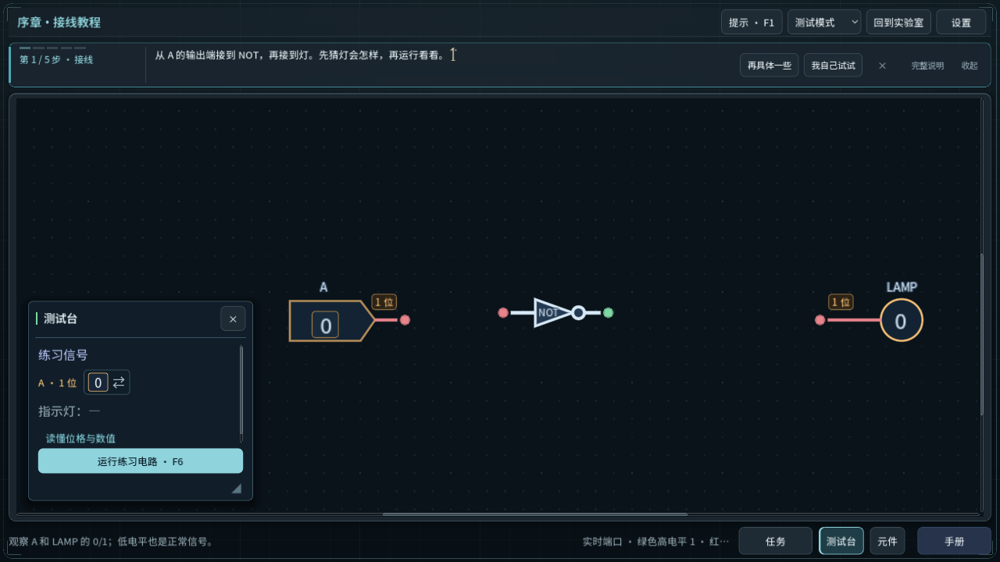
NOT：完整说明
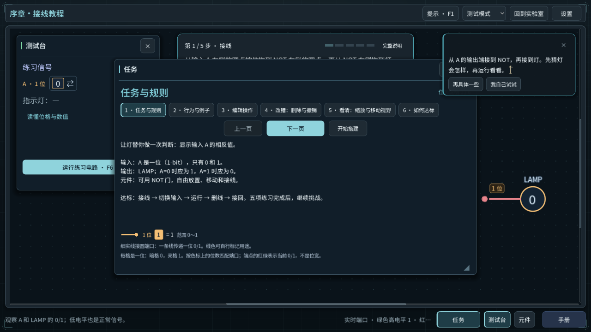
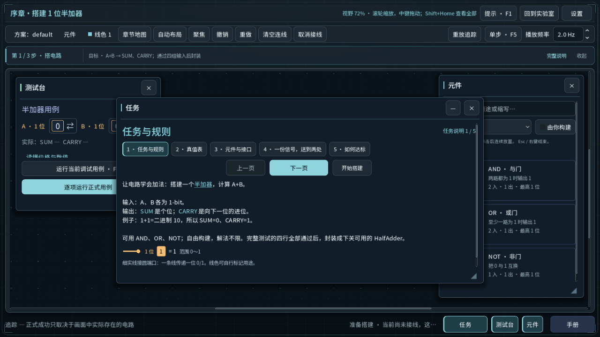
半加器：进入
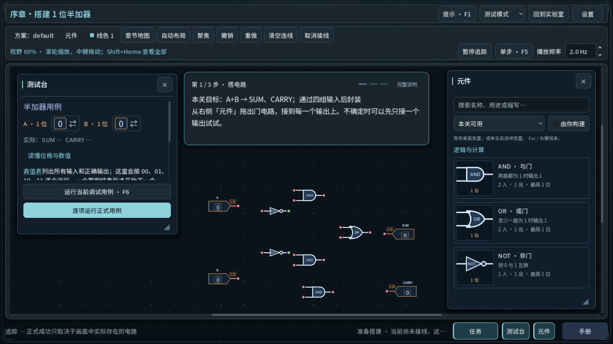
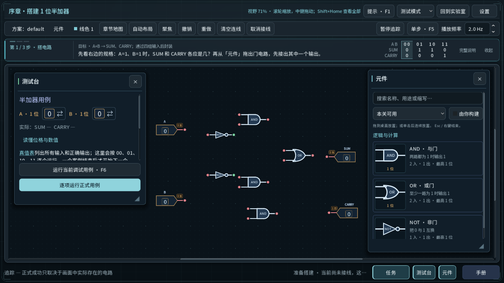
半加器：正式用例失败
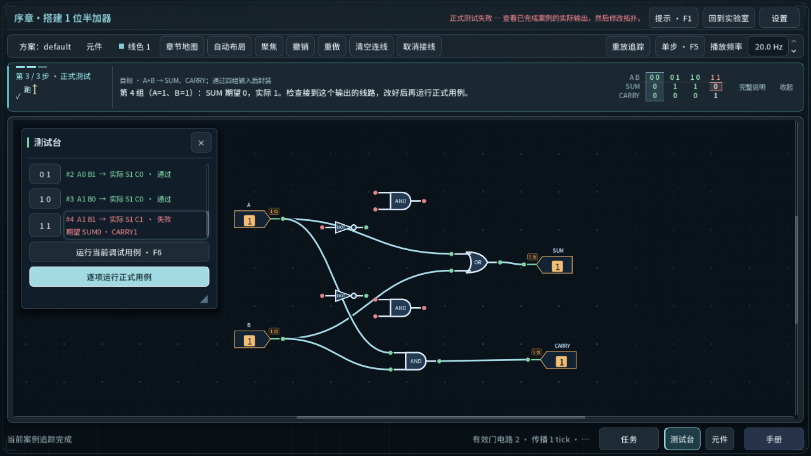
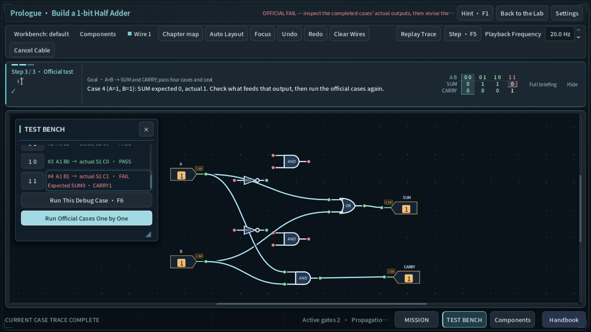
第二章 · 先后有序
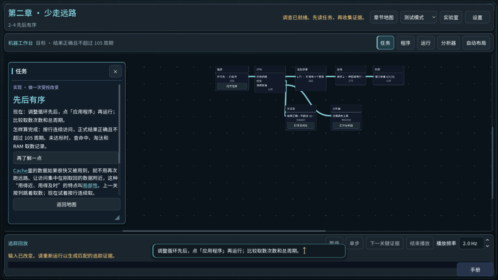
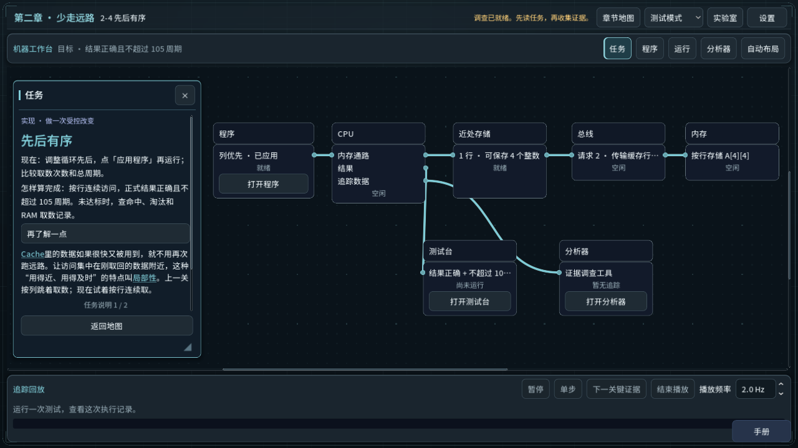
其他工作台顶栏
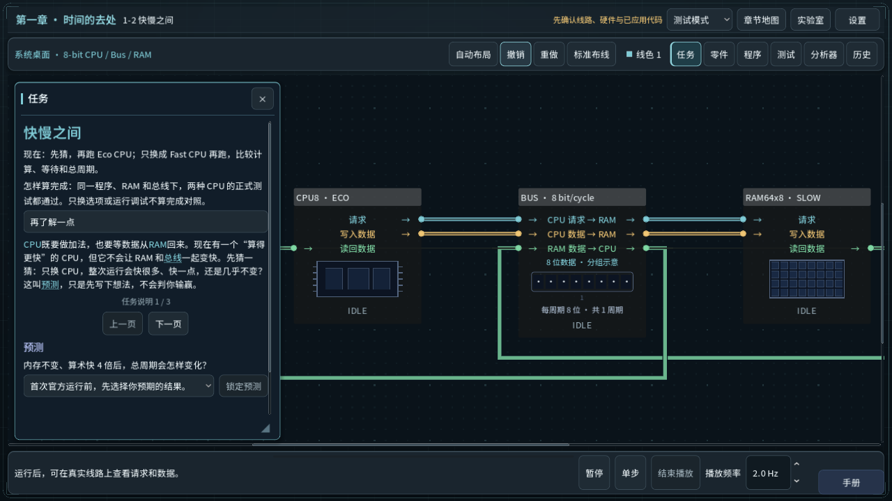
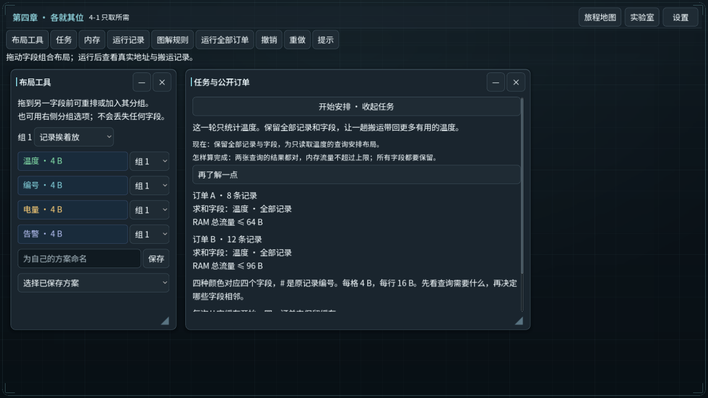